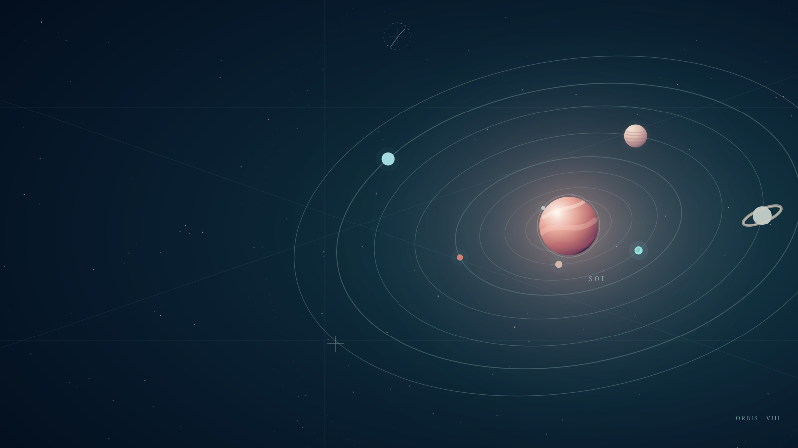

NOTATKI Z HISTORII WIELKIEJ ZMIANY PERSPEKTYWY
To nie niebo krąży wokół nas.
Przez stulecia Słońce wschodziło, planety wędrowały, gwiazdy zataczały kręgi. Wszystko wyglądało tak, jakby Ziemia była nieruchomym środkiem świata. A potem ktoś odważył się narysować niebo inaczej.
Dlaczego Mars czasem zawraca?
Noc po nocy obserwatorzy zauważali, że większość gwiazd zachowuje względem siebie prawie niezmienne położenia, lecz kilka jasnych punktów powoli przesuwa się na ich tle. To planety — dawniej nazywane „wędrowcami”.
Niektóre z nich, jak Mars, od czasu do czasu pozornie zawracają. Widziane z Ziemi zaczynają przesuwać się po niebie w przeciwną stronę, by później wrócić do zwykłego kierunku ruchu. Przez długi czas uczeni budowali geometryczne sposoby przewidywania tych pętli.
Ale wyobraź sobie prostszą sytuację: dwa pojazdy jadą w tym samym kierunku, a jeden wyprzedza drugi. Podczas wyprzedzania wolniejszy pojazd może wydawać się cofać względem odległego krajobrazu. Planeta nie musi zawracać na swojej orbicie — zmienia się nasz punkt obserwacji. [1]
Najpierw trzeba było przesunąć Ziemię.
To nie była jedna noc ani jedno genialne spojrzenie przez teleskop. Zmiana modelu Układu Słonecznego zajęła pokolenia: od pomysłu przez obserwacje aż po prawa ruchu.
Ziemia przestaje być nieruchoma.
W dziele De revolutionibus orbium coelestium Kopernik przedstawił system, w którym Ziemia obraca się wokół osi i wraz z innymi planetami okrąża Słońce. Nie był to jeszcze współczesny model orbit — posługiwał się głównie ruchami kołowymi. [1]
Koło ustępuje elipsie.
Kepler, analizując bardzo dokładne obserwacje planet, opisał ich orbity elipsami i odkrył, że planety nie poruszają się po nich ze stałą prędkością. To geometria, która zaczęła znacznie lepiej zgadzać się z pomiarami. [1]
Nie wszystko okrąża Ziemię.
Galileusz obserwował cztery duże księżyce Jowisza, a także fazy Wenus. Te odkrycia podważyły prosty geocentryczny obraz świata i wsparły nowe rozumienie układu planetarnego. Same fazy Wenus nie rozstrzygały jednak wszystkich konkurencyjnych modeli astronomicznych. [1]
Wreszcie znamy przyczynę.
Newton połączył ruch planet i spadanie ciał za pomocą prawa powszechnego ciążenia. Zamiast samych reguł opisujących orbity otrzymaliśmy teorię, która wyjaśnia, dlaczego taki ruch jest możliwy. [1]
Uwaga historyczna: model heliocentryczny miał również starożytnych prekursorów, m.in. Arystarcha z Samos. Powstanie nowoczesnej astronomii było procesem zbiorowym — nie jednym odkryciem przypisanym jednemu człowiekowi.
Jedna gwiazda. Osiem różnych światów.
Nasz układ planetarny jest rodziną obiektów utrzymywanych przez grawitację Słońca. Nie ma w nim ośmiu identycznych kulek krążących w równych odstępach. Różnią się wielkością, temperaturą, atmosferami, czasem obiegu i budową. [2]
Merkury
Skalisty posłaniec
0,39 AU · 88 dniWenus
Świat pod chmurami
0,72 AU · 225 dniZiemia
Nasz dom
1,00 AU · 365 dniMars
Czerwony sąsiad
1,52 AU · 687 dniJowisz
Olbrzym gazowy
5,20 AU · 11,9 rokuSaturn
Władca pierścieni
9,58 AU · 29,4 rokuUran
Olbrzym lodowy
19,2 AU · 84 lataNeptun
Odległy błękit
30,1 AU · 165 latAU to jednostka astronomiczna: dokładnie 149 597 870 700 metrów. Przybliżone odległości odpowiadają wielkim półosiom orbit. Planety nie przebywają cały czas w jednej stałej odległości od Słońca. Ilustracje powyżej nie zachowują proporcji średnic. [2, 3]
Światło ze Słońca leci do Ziemi przeciętnie około 8 minut i 19 sekund. Do odległości odpowiadającej orbicie Neptuna — ponad cztery godziny.
Planety nie wiszą na niewidzialnych sznurkach. One nieustannie spadają.
Wciąż istnieje pokusa, by myśleć, że planeta przemieszcza się do przodu, a grawitacja przyciąga ją w bok. W przybliżeniu Newtonowskim to użyteczne wyjaśnienie: ciało ma prędkość, a grawitacja nieustannie zmienia kierunek jej wektora. W ten sposób planeta może krążyć po orbicie zamiast spadać prosto na Słońce.
Orbita jest ruchem swobodnym w polu grawitacyjnym. W Układzie Słonecznym planety nie krążą po idealnych okręgach. Ich tory są w pierwszym przybliżeniu eliptyczne, a dodatkowe oddziaływania innych planet nieznacznie je zaburzają. [3, 4]
Nawet „Słońce w centrum” jest uproszczeniem: Słońce również porusza się pod wpływem planet, a cały układ krąży wokół wspólnego środka masy. Dla pierwszej podróży wygodnie jednak przyjąć widok heliocentryczny.
W astronomii zmiana punktu widzenia może zmienić obraz. Nie zmienia jednak praw fizyki.
W 1990 roku zobaczyliśmy własne miejsce na mapie.
14 lutego 1990 roku sonda Voyager 1 odwróciła kamerę ku wewnętrznym obszarom Układu Słonecznego. Z odległości około 6 miliardów kilometrów od Słońca wykonała fotografię, na której Ziemia zajmuje mniej niż jeden piksel. [5]
 DANE Z SONDY / VOYAGER 1 / 14.02.1990
DANE Z SONDY / VOYAGER 1 / 14.02.1990Ta kropka to cały nasz świat.
Wszystkie oceany, kontynenty i ludzkie historie mieszczą się na tym zdjęciu w maleńkim punkcie. To nie artystyczna wizja, lecz zdjęcie z rzeczywistej misji kosmicznej. Widzimy wersję ponownie opracowaną w 2020 roku na podstawie obserwacji z 1990 roku.
NASA/JPL-Caltech · opracowanie obrazu: Kevin M. Gill, przy udziale planistów oryginalnych obserwacji. Poznaj historię fotografii i jej źródło w NASA.Najważniejsze jest to, że możemy zrozumieć, gdzie się znajduje.
Teraz nie musisz wierzyć na słowo. Możesz zmienić perspektywę.
Na końcu rozdziału znajduje się działające planetarium ATLAS SOLARIS. Poruszaj kamerą, wybieraj planety, zmieniaj datę i obserwuj, jak Układ Słoneczny wygląda przy różnych ustawieniach. Przygotowałem cztery zadania na pierwszą wyprawę.
Odnajdź osiem planet
Zacznij od widoku „Cały Układ”. Wybierz Ziemię, a potem Merkurego i Neptuna. Porównaj ich położenia i odległości od Słońca.
Zbliż się do wybranego świata
Użyj listy ciał i kamery. Spróbuj spojrzeć na planetę z innej strony, a potem wróć do widoku całego układu.
Przesuń rok do przodu
Zmień tempo symulacji na 1 rok na sekundę. Porównaj ruch Merkurego i Neptuna. Który z nich szybciej kończy obieg?
Sprawdź, dlaczego obrazy mogą mylić
Wypróbuj przełącznik skali 1:1, jeśli pozwala na to urządzenie. Przekonaj się, jak trudno pokazać prawdziwe odległości i rozmiary na jednym ekranie.
Ograniczenia: planetarium korzysta z przybliżonych elementów orbitalnych NASA/JPL do obliczania pozycji planet w latach 1800–2050. To narzędzie edukacyjne, nie efemeryda do nawigacji statków kosmicznych ani przewidywania precyzyjnych zakryć. Rozmiary planet, odległości i pole widzenia mogą być przedstawiane w różnych skalach. Pełna scena 3D wymaga GPU — dlatego uruchamiasz ją dopiero świadomym kliknięciem.